An experiment in structured AI development.
AI agents can write code. Shipping software — planning, coordinating, testing, merging — that's different. SET applies the practices that always worked to Claude Code agents working in parallel. Specs instead of prompts. Gates instead of hope. Structure instead of improvisation.
It works well enough that I use it every day. It's rough around some edges. I'm curious what you'll make of it.
set-project init --project-type web None of these ideas are new. Specs, planning, quality gates, supervision, learning from failures — development teams have always done this. The experiment is applying them to autonomous agents.
Output quality depends on input quality. 90% of agent failures are underspecification.
Structured artifacts: proposal → design → spec → tasks → code. Acceptance criteria (WHEN/THEN), requirement IDs (REQ-xxx), end-to-end traceability. Agents implement against the spec, not their imagination.
Figma Make → set-design-sync → per-change design.md with scope-matched tokens. Each agent gets only the colors, fonts, layouts for its pages. Not "make it look nice" — exact hex values, exact spacing. Part of the built-in web project type — the battle-tested default.
Full 30-page spec with Figma design. Or 3 requirements for your existing codebase. Or a single task description. The pipeline scales from a sentence to a specification. /set:write-spec generates structured specs interactively.
The principle hasn't changed: output quality depends on input quality. Writing a good spec takes effort. But agents working from a detailed spec produce dramatically better results than agents working from a conversation.
The better the spec, the better the result. That's the trade-off SET makes — upfront structure for reliable output.
One big task fails. Many small ones succeed. Max 6 requirements per change — above that, failure rate spikes.
Spec → requirements → dependency graph → phased execution. Changes that don't depend on each other run in parallel. Changes that do, wait. The planner does this automatically — no manual sprint planning.
Multiple Claude agents in isolated git worktrees. Real branches, real merges. No containers, no VMs — just git. Even with a single change, the worktree provides isolation — your main branch stays clean until gates pass. With multiple changes, they run in parallel without interference.
S/M/L sizing per change. Token budgets (S: 2M, M: 5M, L: 10M). Model selection per complexity. These thresholds come from 100+ production runs — not guesswork.
Agents don't get a prompt and good luck. They get structured artifacts, project-type conventions, and iterative loops with progress tracking.
Iterative agent development cycle: proposal → design → spec → tasks → code. Not a single-shot prompt — multiple iterations with stall detection, done criteria, and context pruning between turns. Single-shot gets you 70% done. The loop gets you to merge.
The built-in web project type: Next.js, Playwright, Prisma templates. Agents work into existing structure, not from scratch. Convention enforcement, route groups, colocation rules. Build your own for any stack — fintech, healthcare, CLI, API.
Every agent gets: scoped proposal, task list with REQ-IDs, design.md with exact tokens, MCP tools for memory and team sync. Plus: token budget awareness, progress-based trend detection, and auto-pause when stuck or over budget.
The goal is always the happy path. But when things break — and they will — recovery must be fast, thorough, and automatic.
3-tier decision model: sentinel → orchestrator → agents. Each tier handles its own failure mode. Agents handle code errors. Orchestrator handles workflow errors. Sentinel handles infrastructure — crashes, disk, deadlocks. 30s detection, auto-recovery.
Context-aware stall detection. pnpm install taking 90s with no stdout? Grace period. Prisma migration running? Extended timeout. Graduated escalation: warn → restart → rebuild → give up. Not "no output = dead."
Multi-agent messaging. Broadcast status, avoid file conflicts, coordinate dependencies. The orchestrator sees what everyone is doing — and intervenes when needed.
Real-time monitoring at localhost:7400. Step progress, gate results, token charts, agent terminal, sentinel decisions, learnings — every tab is live. Start orchestration from the browser. Not a CLI afterthought — a proper operations center.
Exit codes, not LLM judgment. You can't talk your way past a failing test.
Test, build, E2E, lint, review, spec coverage, smoke. Sequential pipeline — fast gates first. If Jest fails in 8s, you don't wait 45s for Playwright. Exit codes decide pass/fail. BDD traceability binds REQ-IDs to tests.
Gate fails → agent reads error → fixes → re-runs gate. Not "retry 3 times and give up." The agent diagnoses. MiniShop: 5 gate failures, 5 autonomous fixes — including IDOR vulnerabilities caught and patched without human review.
3-layer templates + set-compare scoring. Run the same spec twice: 87% structural overlap on micro-web, 83% on minishop. Schema equivalence: 100%. Convention compliance: 100%. The remaining divergence is stylistic, not structural.
"Tests pass" does not mean "spec is implemented." The verify gate checks every REQ-ID has corresponding code. If 28/32 requirements are covered, auto-replan kicks in for the remaining 4. Doesn't stop until 100%.
The real value shows from run #2 onward. Every error occurs only once.
Gate failures become planning rules. set-harvest extracts framework-level fixes from 100+ runs across 4 projects. Each run is smarter than the last — not by prompting better, but by codifying what went wrong into rules.
Hook-driven cross-session recall. Agents learn from each other. Shared across worktrees. In 15+ sessions, agents made 0 voluntary memory saves. Zero. So we built 5-layer hook infrastructure that captures everything automatically.
Telling 5 agents "create a Next.js project" produces 5 different directory structures. Templates produce one. 3-layer system: core → module → project. Reduced file structure divergence from 63% to 0%.
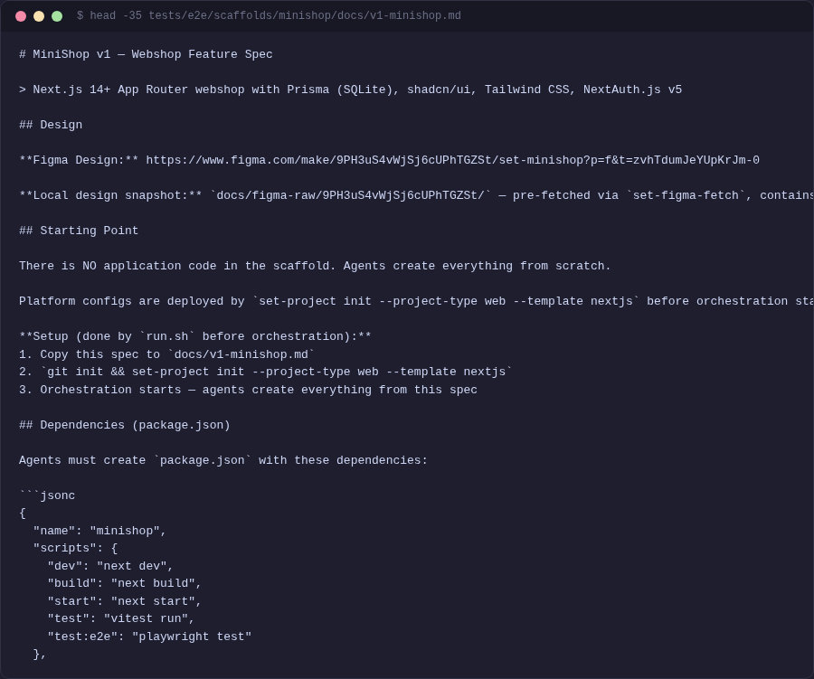
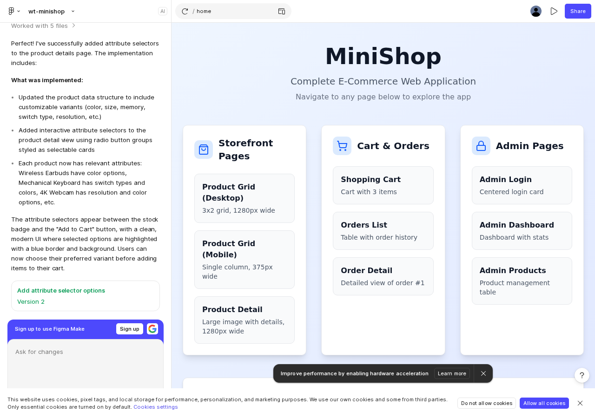
/set:write-spec for interactive spec generation, set-design-sync to extract Figma tokens.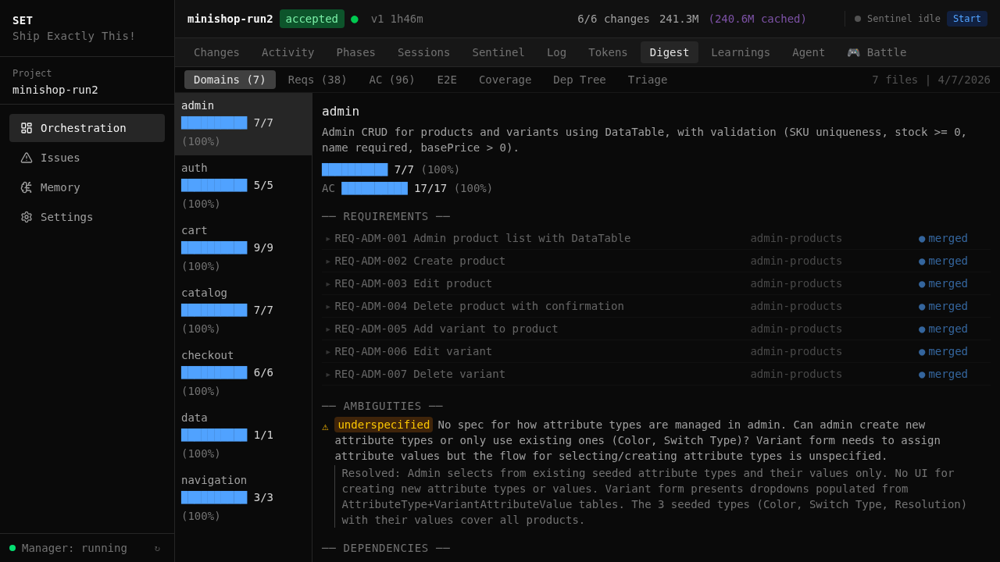
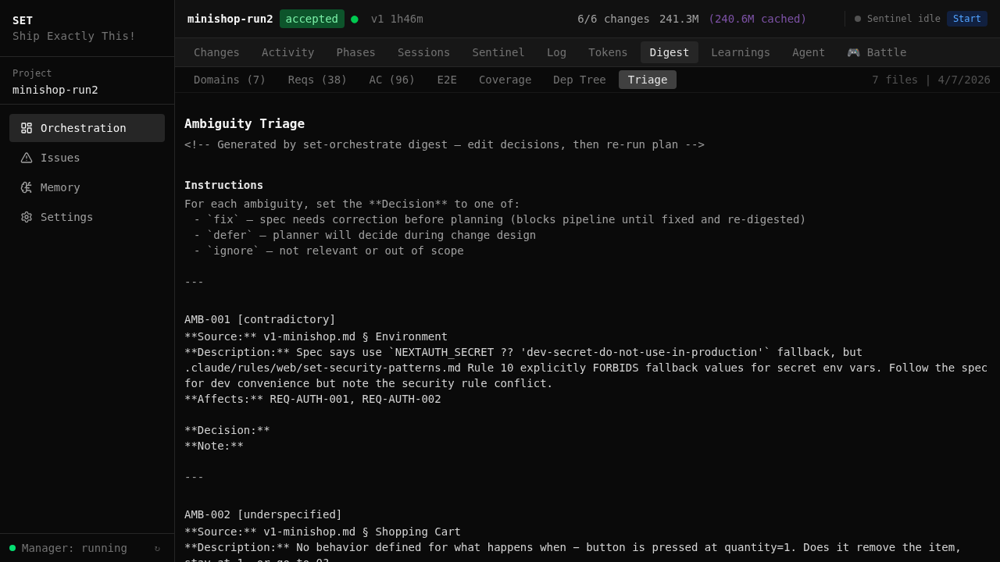
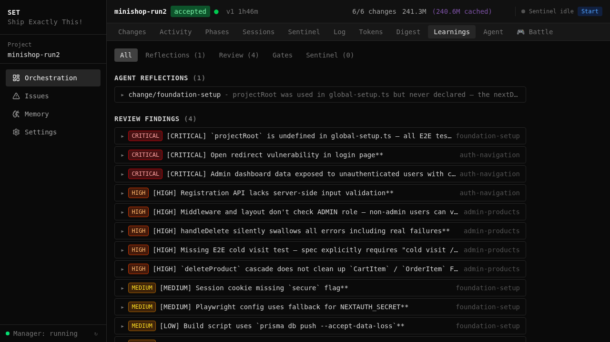
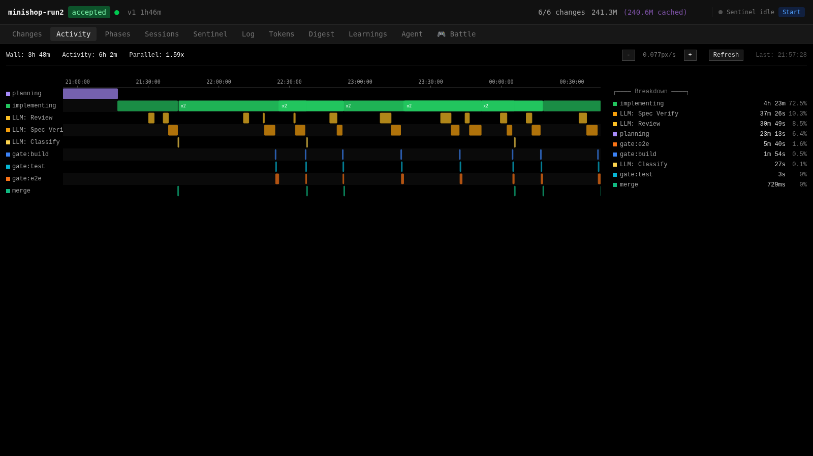
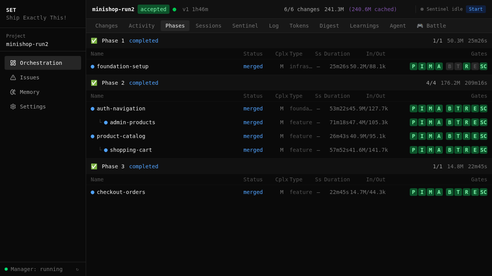
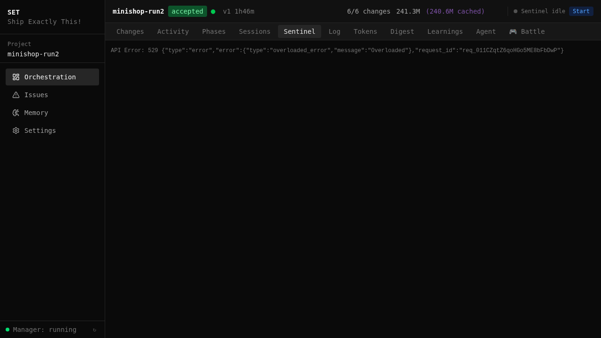
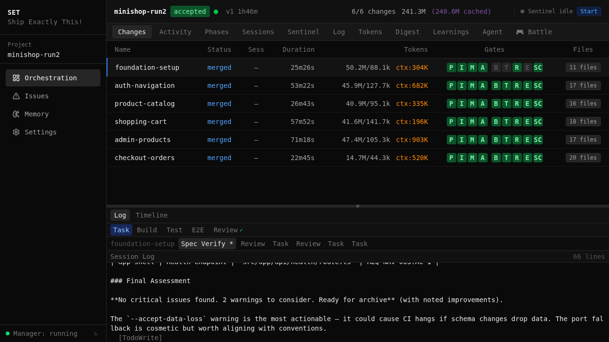
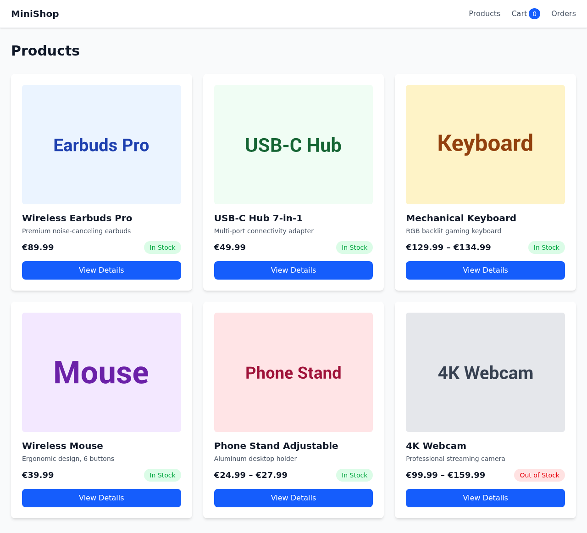
spec.md ─► digest ─► triage ─► orchestrate ─► verify ─► ship
The same pipeline works at different scales. Most of our testing is greenfield (easier to measure), but the interesting work is brownfield — adding to existing codebases.
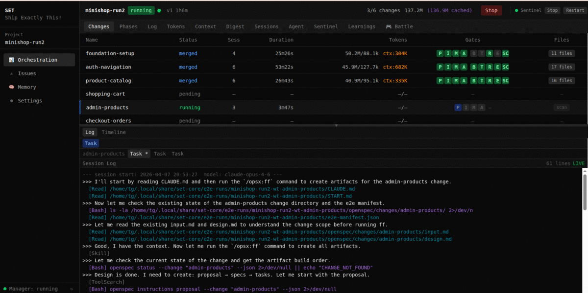
100+ orchestration runs across 4 project types. set-compare measures structural similarity between independent runs of the same spec. Here's where things stand.
| challenge | approach | result |
|---|---|---|
| output divergence | 3-layer template system + set-compare | 87% micro-web · 83% minishop · 4 project types |
| convention compliance | route groups, colocation, naming rules | 100% across all runs |
| quality roulette | 7 programmatic gates (exit codes) | deterministic |
| hallucination | OpenSpec artifacts + acceptance criteria | spec-verified |
| spec drift | coverage tracking + auto-replan | 100% coverage |
| failure recovery | issue pipeline (detect → diagnose → fix) | auto-recovery |
| agent amnesia | hook-driven memory (infrastructure) | 100% capture |
The sentinel doesn't blindly retry. It reads logs, traces root causes, and dispatches targeted fixes. Environment misconfigured? It reconfigures. Dependency conflict? It resolves. The goal is that each failure only happens once.
This doesn't always work perfectly — sometimes it chases the wrong root cause, sometimes the fix creates a new problem. But over 100+ runs, the pattern holds: detect, investigate, fix, learn.
Real issue tracker from 100+ orchestration runs. Every resolved issue was fixed autonomously.
The activity timeline shows every gate, LLM call, and agent session on a time axis. Click any span to drill into tool execution, wait times, and the longest operations.
This matters because most of the cost in AI development is wasted compute on runs you can't observe. The dashboard makes the pipeline visible so you can see what's slow and why.
Top: full run timeline with every change as a row. Bottom: one implementing span expanded — tools, LLM calls, sub-agents, and the longest operations.
Slash commands in Claude Code, CLI tools in your terminal. Everything composes.
Plus: set-new, set-work, set-merge, set-close (worktrees) · /set:status, /set:msg, /set:inbox (team sync) · /set:todo, /set:loop, /set:push (workflow)
SET ships with a web project type (Next.js, Playwright, Prisma) — that's what we test against most. The architecture is designed so you can build your own for any stack.
SET is a working experiment, not a finished product. It handles my daily development work — features, refactors, bug fixes — reliably enough that I reach for it by default. But it has rough edges. Some runs need intervention. Some configurations take trial and error to get right.
The interesting question isn't whether this specific tool is "the one." It's whether structured, spec-driven development is the right way to work with AI agents. I think it is — and every run gives more data on where structure helps and where it gets in the way.
Models keep getting better. The orchestration layer on top needs to evolve with them. Maybe this grows into something bigger. Maybe the ideas here get absorbed into the tools themselves. Either way, the best time to figure out how to work with AI agents is right now.
SET is open source (MIT). Clone it, run a test orchestration, see if it fits how you work. Contributions, bug reports, and honest feedback are all welcome.
Clone the repo, run ./install.sh, start a micro-web test run. See the pipeline end-to-end in ~45 minutes. No commitment needed.
Build a project type for your stack. The plugin system is designed for it — fintech rules, healthcare compliance, your domain conventions. Or improve the web type that ships by default.
Have an interesting project? Need help setting up orchestration for your codebase? I'm happy to pair on it — whether that's a quick call or a longer engagement.
when orchestration gets intense, defend your changes.
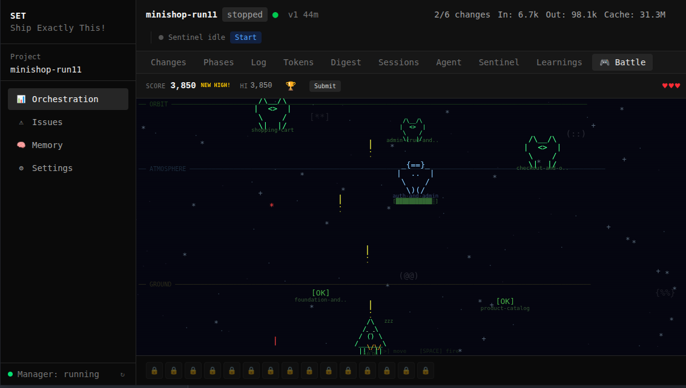
arrow keys + space. every change is a ship.
How does SET compare to Cursor, Devin, Kiro, Copilot, Augment?
Read the FAQHonest comparison — what SET does well, where others are ahead, and the trade-offs we chose.